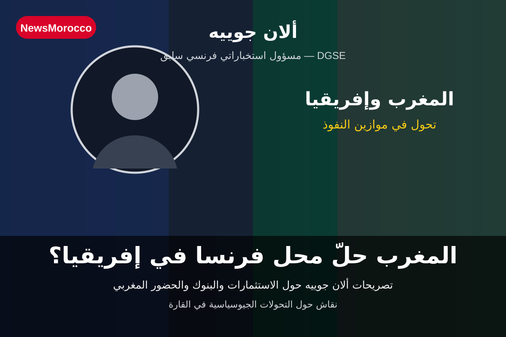

ألان جوييه: المغرب حلّ محل فرنسا في إفريقيا؟
عاد اسم ألان جوييه إلى الواجهة في النقاش حول التحولات التي تعرفها علاقات فرنسا مع إفريقيا، بعد تصريحات سابقة للمسؤول الفرنسي الاستخباراتي السابق تحدث فيها عن تنامي الحضور المغربي في القارة.
جوييه شغل منصب مدير الاستخبارات الخارجية في المديرية العامة للأمن الخارجي الفرنسية (DGSE) بين 2002 و2003، ثم تولى لاحقًا مسؤولية الاستخبارات الاقتصادية لدى رئيس الوزراء الفرنسي. وتمنحه هذه الخلفية حضورًا خاصًا في النقاشات المتعلقة بالأمن والاقتصاد والجغرافيا السياسية.
وفي تصريحات أخرى نُشرت سنة 2024، قال جوييه إن المغرب أصبح قائدًا في إفريقيا، وربط ذلك بسياسة الاستثمار المغربية واتساع الحضور الاقتصادي والدبلوماسي للمملكة.
وتأتي هذه التصريحات في سياق أوسع يشهد تراجعًا أو إعادة تموضع للنفوذ الفرنسي في عدد من الدول الإفريقية، بالتزامن مع صعود أدوار قوى وشراكات جديدة. كما توسع المغرب خلال السنوات الماضية في الاستثمار داخل القارة، خاصة في القطاعات البنكية والمالية ومشاريع البنية التحتية والطاقة.
لكن هل يعني ذلك أن المغرب أخرج فرنسا من إفريقيا بالكامل؟ ليس بهذه البساطة؛ فالمشهد الإفريقي متعدد الأطراف، وفرنسا ما تزال تحتفظ بمصالح اقتصادية وشبكات وشركات داخل القارة. لذلك فإن عبارة «حلّ محل فرنسا» تُفهم هنا باعتبارها توصيفًا قدمه جوييه للتحول في النفوذ، وليست حقيقة مطلقة تحسم كل جوانب المشهد.
Le360: مقابلة ألان جوييه حول مكانة المغرب في إفريقيا.
H24info: تصريحات جوييه حول الاستثمارات والبنوك المغربية في إفريقيا.